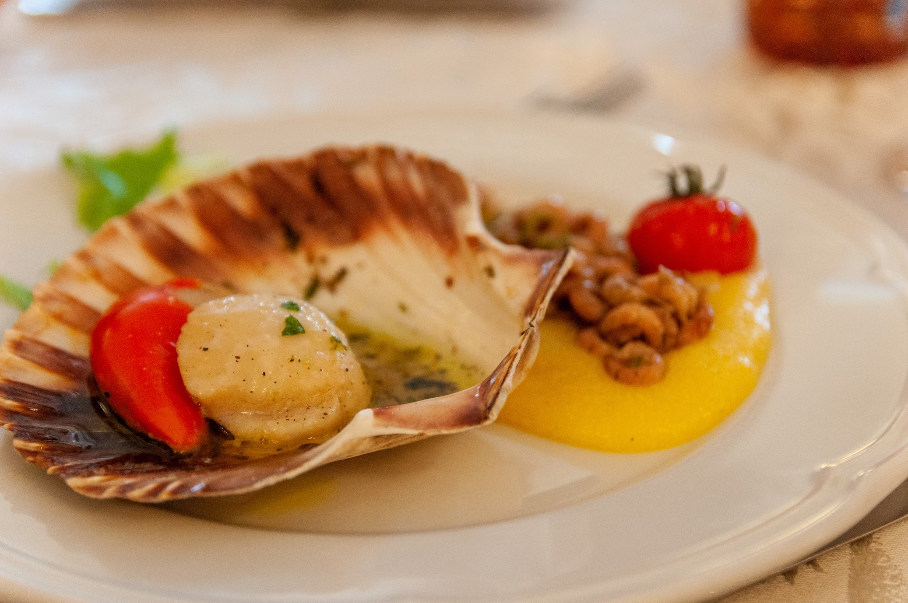

Noix de Saint-Jacques flambées au cognac

Faire fondre du beurre avec des échalotes puis ajouter les noix de Saint-Jacques. Les faire revenir en laissant
le milieu translucide puis les retirer du feu.
Ajouter l'ail et le persil dans la poêle et laisser cuire quelques secondes. Bien faire chauffer la poêle, puis
flamber au Cognac. Une fois la flamme éteinte, ajouter les noix de Saint-Jacques (il ne faut pas les flamber car
elles perdraient leur saveur).
Dégustez chaud ou accompagné d'une fondue de poireaux.